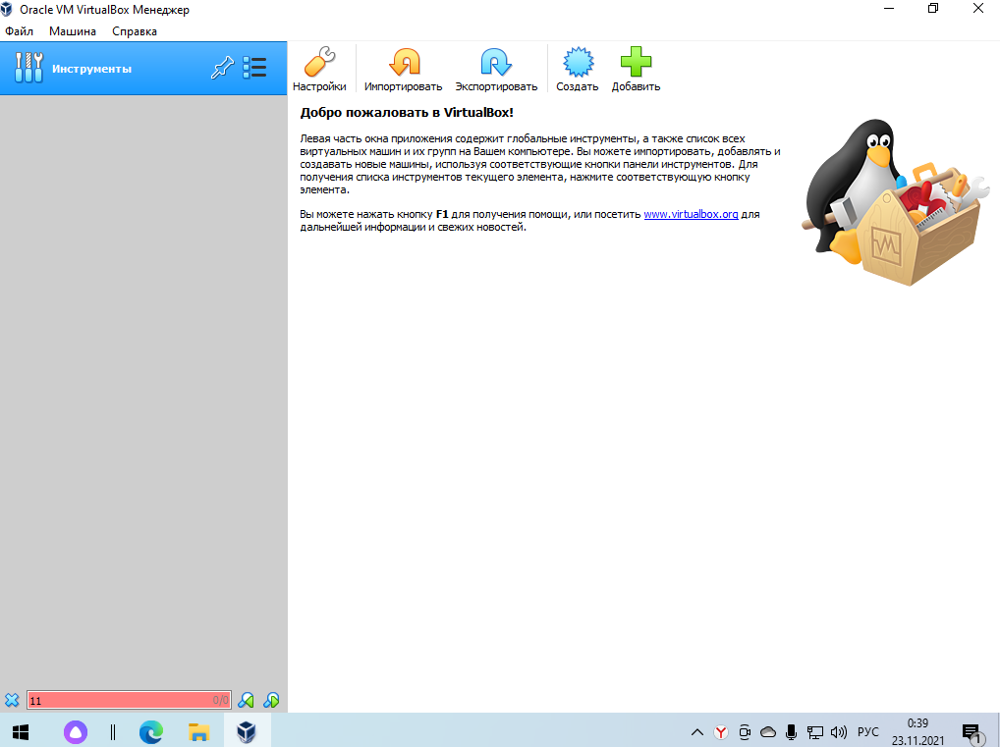
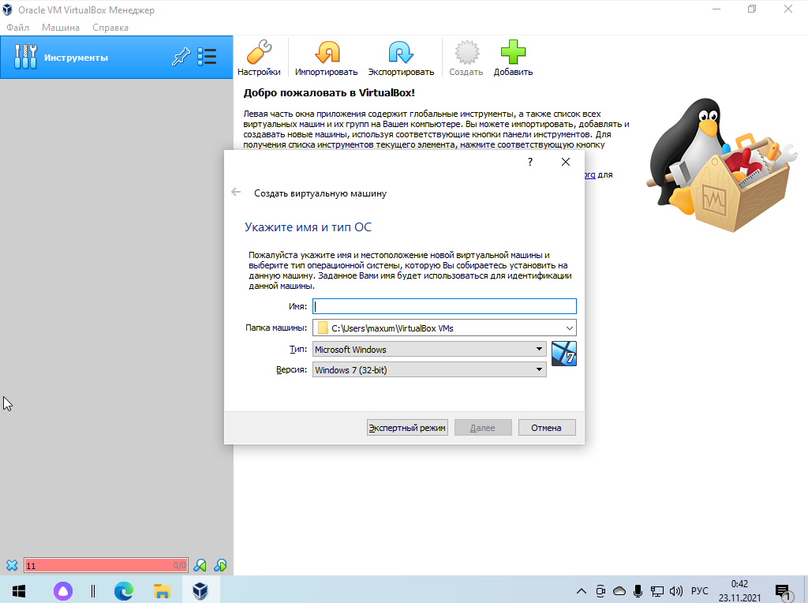
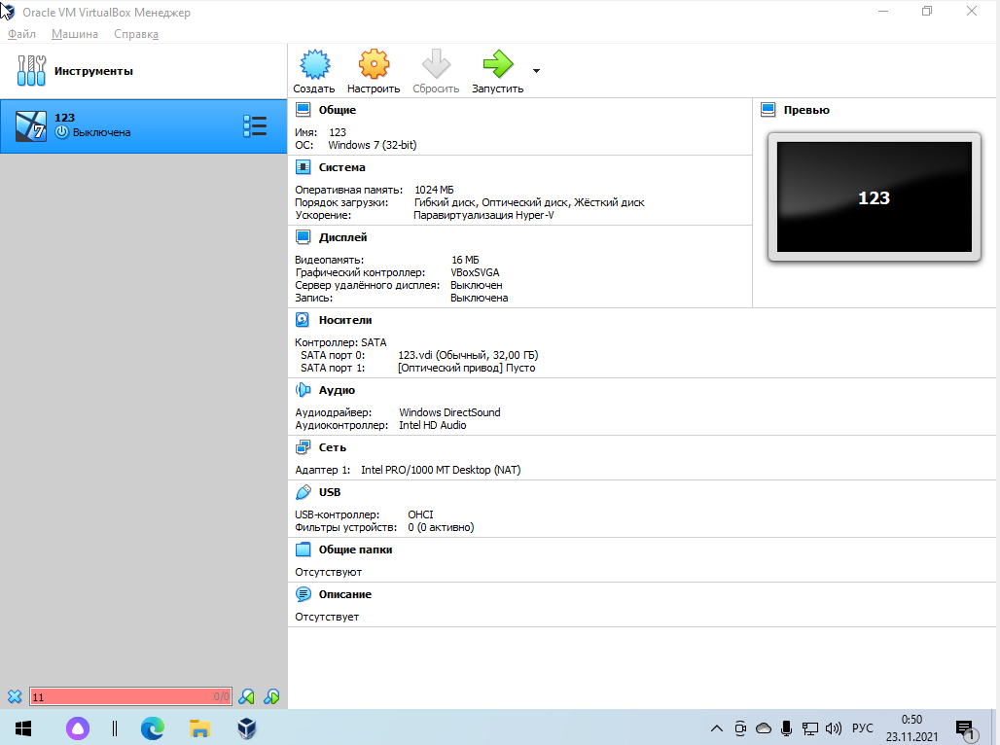
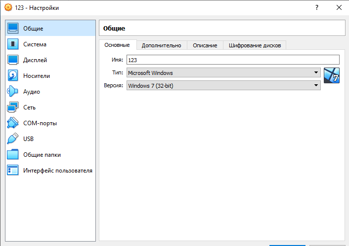
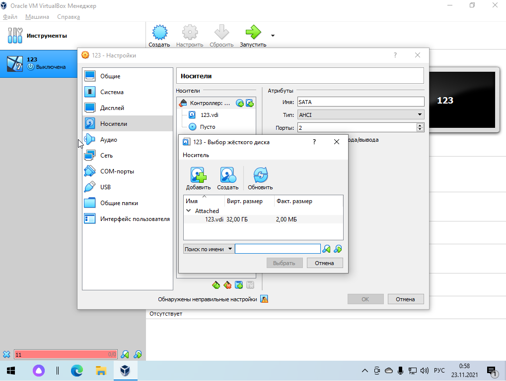

Virtual Box - самое популярное в мире кросс-платформенное программное обеспечение для виртуализации с открытым исходным кодом.
Наиболее известна и популярна у домашних пользователей ПК.
Она представлена на русском языка русифицирована, бесплатная, поддерживает все основные операционные системы и довольно проста в применении.
Вся установка выполняется в графическом интерфейсе. При создании машины необходимо задать множество параметров, выбрать тип операционной системы и ее разрядность, выбрать объем памяти, создать жесткий диск, настроить видеопамять.
Установка может быть выполнена из образа ISO, флешки или DVD. Однако, как и при установке на обычный компьютер, нужно будет выполнить всю установку вручную.
Основные возможности:
- Поддержка работы через командную строку
- Интеграция экрана, общий буфер обмена и обмен файлами между хостом и гостевой системой;
- Поддержка 3D графики ограничена, только OpenGL до 3.0
- Поддерживается неограниченное количество снимков состояния операционной системы
- Поддерживается шифрование диска виртуальной машины через VBoxExtensions
- Поддерживаются USB 2.0/3.0
Рассмотрим интерфейс и основные функции программы.

Для создания новой системы необходимо нажать на поле "Создать". Далее необходимо выбрать параметры: задать имя новой системы, указать папку машины, выбрать тип и версию новой системы

Далее программа предлагает выбрать параметры для нашей новой системы: Задать количество оперативной памяти, выделяемой для данной системы, выбрать жесткий диск. Выбрать можно существующий виртуальный жесткий диск или создать новый. После нажатия в последнем окошке кнопки «Создать» в списке появится новая виртуальная машина.

Прежде чем запускать систему, можно изменить параметры конфигурации виртуальной машины. С его помощью мы можем, например, настроить память, процессор и 3D-ускорение машины, настроить экран и графику, память, сеть, аудио и многое другое.

В разделе "Носители" необходимо смонтировать образ ISO с операционной системой, которую мы хотим установить.

После загрузки нужного ISO файл, нас будет приветствовать стандартный экран загрузки системы, а впоследствии активация системы.